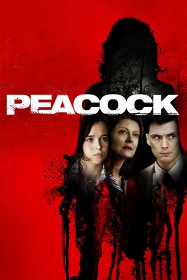

#7812 Peacock
 
 IMDB-Wertung: 6.3 / 10
IMDB-Wertung: 6.3 / 10  Metascore: 0
Metascore: 0 
John Skillpa, ein ruhiger aber freundlicher Einwohner der kleinen Provinzstadt Peacock, hat ein Geheimnis. Wenn John von der Arbeit nach Hause kommt, verwandelt er sich in Emma Skillpa, seine imaginäre, fürsorgliche Ehefrau. Sein bis dahin unentdecktes Doppelleben gerät völlig aus den Fugen, als Emma bei einem Zugunglück zum ersten Mal von Bewohnern der Kleinstadt gesehen wird. Während John verzweifelt versucht, ihre Indentität zu vertuschen, übernimmt Emma immer mehr Kontrolle über ihr gemeinsames Leben – mit allen Konsequenzen.
Jahr: 2010
Dauer: 83 Minuten
FSK: 12
Land: USA Studio: Lionsgate Home EntertainmentTonspuren:
Untertitel:
Auflösung: 1080p (1920x1080) Größe: 4014 MB
Genre: Thriller, Drama
Regisseur: Michael Lander
Drehbuch: Michael Lander
Soundtrack: Brian Reitzell
Darsteller:
 Cillian Murphy als John / Emma Skillpa
Cillian Murphy als John / Emma Skillpa Ellen Page als Maggie
Ellen Page als Maggie Susan Sarandon als Fanny Crill
Susan Sarandon als Fanny Crill Josh Lucas als Officer Tom McGonigle
Josh Lucas als Officer Tom McGonigle Bill Pullman als Edmund French
Bill Pullman als Edmund French Graham Beckel als Connor Black
Graham Beckel als Connor Black Keith Carradine als Ray Crill
Keith Carradine als Ray Crill- Virginia Newcomb als Doris
- Jaimi Paige als Wanda
- Paul Cram als Kenny
- John Paul Gamoke als Mr. Clapp
- Brian Foyster als Guy in Bar
- Eden Bodnar als Louise Sternberg
- Chris Carlson als Neil
- Flynn Milligan als Jake
- Nathan Christopher als Cal
- Richard Latch als Mack
- Tate Hustedt als Brian Sternberg
- Tory Schaefer als Will
- Craig Michael als Ron Sternberg
- Scott Schulte als Priest
- Peter Gregory Thomson als Senator Wyatt
- Michael Rosner als Motel Manager
- Erin Stover als Mother at Shelter
- Bethany Larson als Driver
- Emily Dooley als Glenda
- Bridget de vos Vaudt als Mother #1
- Mark Burk als Foreman
- Harrison Pike als Boy
- Joel Thingvall als Guy in Bar (uncredited)
Datei: X:\2010(N-Z)\Peacock (2010, FSK12, 1920x1080).mkv seit 20.12.2017
Festplatte: HD 2010(G-Z)-2011(A-F)
 Es gibt insgesamt 115 Filme in der Gruppe '2010(N-Z)'
Es gibt insgesamt 115 Filme in der Gruppe '2010(N-Z)'